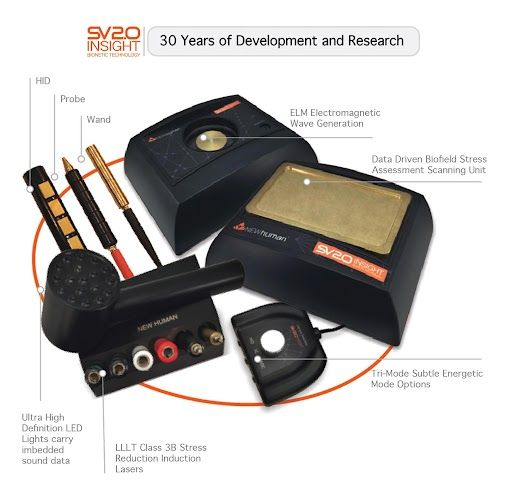

DNA holds patterns that influence how your body prefers to manage everyday toxins, use nutrients from food, create energy, and maintain balance. This is a personalized, wellness educational program based on your own health data, not medical genetics or diagnostic or treating a disease.

That all looks great! …
Thanks again for everything today!
So, Week One:
We are definitely moving in the right direction with what we are doing!
All in all - amazing progress in 1 week! I am thrilled:)
Also, immediately after the laser treatment I felt a sense of relief...
10/8/25 Update …
But, I realized that I had run out of Free and Easy Wanderer and stopped taking it during that time. …
I have noticed an increased ability to handle high stress situations without shutting down, or processing information too slowly to react. I notice the shift in general emotional range almost immediately after the use of the laser during our sessions. …
Perhaps because I am finally able to get out and socialize after a year at home just barely able to do activities of daily living, I am really noticing my ability level change from prior to my 3 fainting episodes (from hypoxia).
This has been a bit depressing comparing the old and new me, but the fact that I am able to leave the house, drive for more than 2 hours without fainting, is life changing, so I am trying to focus most on the positive. …
However, again, the fact that I am able to leave the house for this pickleball class at all is a huge change from prior to our first session. …
I have been reheating potatoes like we talked about, I have noticed a decrease in bloating. …
I feel like I am able to absorb all nutrients in my food better, as well as vitamins, decreasing the $$$$s annual budget for vitamins and supplements. …
My skin and eyes look healthier, as well as the permanent eye bags with dark circles that I had prior to our first session, are nearly gone. My skin also is less dry and more elastic.
I decided to try SpectraVision with her, and within a week I had more stable energy than I had in 3 years. … My painful digestion and bloating went away. … Michelle's knowledge about how to achieve lasting health, and Spectravision have improved my health more in 3 months than I experienced in 3 years with mainstream medical supports, and I just want to shout it from the rooftops: If you have been struggling with a chronic illness, give Spectravision with Michelle a try. … It is the safest, and most useful way to achieve lasting wellness.
– Lauren P.
Background info: On October 18th 2024 I had my third hypoxic event due to Orthostatic Hypotension, which had far more severe repercussions than the last two events. The repercussions were similar to a stroke, affecting fine and gross motor skills, as well as memory and speech. For two months I could not walk without support, I could not speak in sentences, read, or write, and experienced memory loss, as well as an inability to connect memories to time. I had 24/7 vertigo and dizziness, with nausea. I lost all appetite, and was unable to digest anything I ate. I was bloated to a level of about 6 months pregnant at all times. I had widespread pain and inflammation. I woke up every night and stayed awake for hours. As someone who has spent time working with patients in hospice care, all skills and energy level were on par with someone entering the last stages of life due to chronic illness. Acupuncture was the only way I achieved relief from dizziness and vertigo, but I had to go back every week - 2 weeks. After 4 months I could walk around the block unaided. After 6 months I could drive again for short distances, speak in sentences/read, and the bloating went down to about 3 months pregnant. But my fatigue was still unmanageable. I pushed myself to do 20 minutes of activity, and only managed about an hour of work per day. I was still unable to process conversation in groups, and was too tired to leave the house more than once a week. There was always a risk when I drove that I would have to lay in my car for 45 min with my legs up before I could manage a drive home due to fatigue, dizziness, and nausea. I tried chelation, which was very helpful for my speech abilities. I was able to recall more words faster, thereby enhancing my minimum length of utterances. I also began to have creative and original thoughts again. I was able to eat high quality gluten and dairy without extreme reactions (had been diagnosed intolerant by blood test at age 23). I still dealt with extreme fatigue, and widespread inflammation, but was able to leave my house 2x a week for 3 hours max before I had to lay down. I was still not mentally capable of processing information quickly enough to perform the duties required for my career, and was too fatigued to be able to endure 8 hours of work. The mainstream medical system had no other recommendations for me, and I felt that my diagnosis of Orthostatic Hypotension was really more of a symptom of something else, like Long Covid, that was being ignored by my doctors because they did not have any protocols for this diagnosis. All they told me to do was stay hydrated with electrolytes, and wear compression socks. But I did not intend to be disabled for the rest of my life.
After 3 years, 4 doctors, $20,000 in out of pocket medical and supplement costs, poor health outcomes, as well as lost income from nearly a year of work, it became clear that the mainstream medical field has no effective protocol for reversing Long Covid/Orthostatic Hypotension. I began to look for my own answers. I used supplement based Long Covid Protocols, as well as books on the use of ancestral natural remedies. But there were many supplements there that when combined actually worsened the effects of Orthostatic Hypotension. Many well meaning doctors did not understand the medical procedures and supplements they were prescribing. I realized I needed someone who understood the foundations of wellness, and could create an individualized program for me, if I was ever going to defeat my chronic illness. I ran into Michelle by chance, and found that her knowledge of mainstream medicine as well as food and supplement use was much deeper than any doctor I had spoken with. I decided to try SpectraVision with her, and within a week I had more stable energy than I had in 3 years. I was able to understand the serious effects on my body of foods I ate every day, and find a diet that matched my needs. Her tinctures were far less expensive than supplements I had been buying, and were far easier on my body, and through the Spectravision system, they were personalized exactly for me. My painful digestion and bloating went away. Vertigo and nausea, energy levels, verbal abilities, inflammation and pain, as well as skin/hair/nail appearance all improved. Within 2 months I felt confident enough in my physical and mental skills, and the stability of my energy, as well as my new knowledge of supports for my own wellness, to apply to work again. Michelle's knowledge about how to achieve lasting health, and Spectravision have improved my health more in 3 months than I experienced in 3 years with mainstream medical supports, and I just want to shout it from the rooftops: If you have been struggling with a chronic illness, give Spectravision with Michelle a try. It is the safest, and most useful way to achieve lasting wellness.
(Must have received Initial SpectraVision Session)
*Price excludes the daily supplements purchased by client outside of the SpectraVision sessions but includes 2-3 recommended New Human supplements; $25-35 added for additional New Human supplements needed.
SOLENYA HEALTH
Michelle A. Adams, BNC
Wellness & Nutrition Coach
343 Elm Street, Suite 401
Reno, NV 89503
Solenyahealth@proton.me
775-741-6188